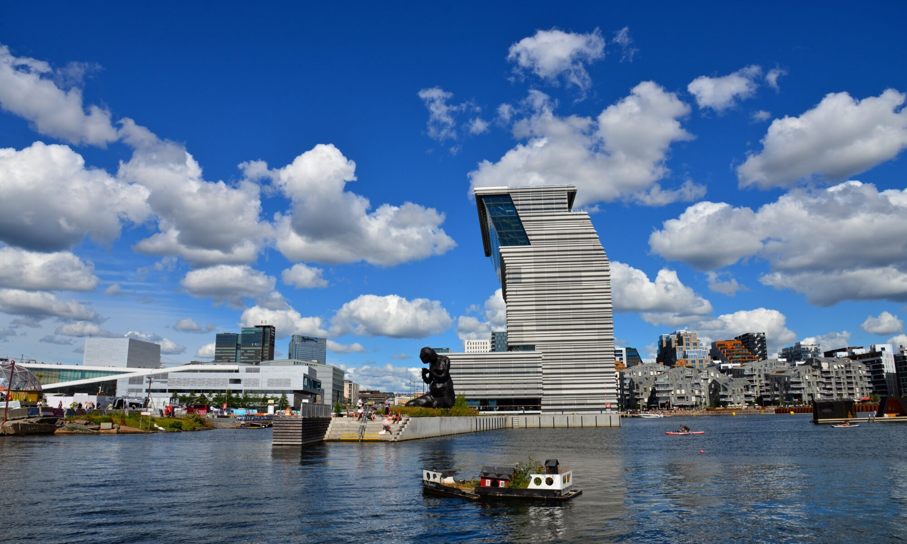

ПОНУДА ЦЕЛА ГОДИНА

ОСЛО И ФЈОРДОВИТЕ
Осло, Норвешка
18.11 - 25.11
Откријте ја неверојатната убавина на Норвешка, земја на величествени фјордови, планини и прекрасни природни пејзажи. Истражете го модерниот Осло, прошетајте покрај живописните улици и уживајте во незаборавно патување низ норвешките фјордови. Совршена понуда за љубителите на природа, авантура и скандинавска култура во текот на целата година.
СКАНДИНАВСКА АВАНТУРА
Главниот град на Норвешка, сместен меѓу фјордовите и зелените природни предели, познат по својата модерна архитектура, богата историја и прекрасното крајбрежје. Ќе имаме можност да ги видиме Кралската палата, Парламентот и Оперската куќа, како и да прошетаме по познатата улица Карл Јоханс. Осло нуди интересна комбинација од култура, музеи, паркови, шопинг и модерна скандинавска атмосфера.
Еден од најпознатите и најимпресивни фјордови во Норвешка, препознатлив по длабоките сини води, високите планини и спектакуларните водопади. Природата околу фјордот создава прекрасни панорамски глетки, а прошетката и престојот во оваа област нудат незаборавно искуство во срцето на норвешката природа.
Еден од најубавите норвешки градови, познат по својата живописна положба меѓу планините и фјордовите и богатото историско наследство. Најпознат е квартот Бриген, со карактеристичните шарени дрвени куќи покрај пристаништето, кој е еден од симболите на градот. Берген нуди прекрасна атмосфера за прошетки, фотографирање, уживање покрај пристаништето и откривање на локалната култура.
Прекрасни природни предели исполнети со високи планини, зелени долини, кристални езера и живописни фјордови. Патувањето низ норвешките планини овозможува уживање во спектакуларни панорамски погледи и запознавање со една од највпечатливите природни области во Европа. Ова е совршена можност за кратки прошетки, фотографирање и целосно уживање во норвешката природа.
Состанок со групата на аеродром во Скопје, 2 часа пред летот. Следува директен лет до Норвешка и пристигнување на аеродромот. По завршувањето на аеродромските процедури следува организиран трансфер до хотелот и сместување. По сместувањето е предвидено време за одмор и освежување. Во попладневните часови следува прва прошетка низ околината и запознавање со норвешката престолнина. Вечерта е слободна за вечера и индивидуални активности. Ноќевање во хотел.
Појадок во хотелот и организирано разгледување на Осло. Следува прошетка низ централниот дел на градот и посета на главните знаменитости, меѓу кои Кралската палата, Парламентот, Оперската куќа и познатата улица Карл Јоханс. Предвидена е прошетка покрај модерниот дел на градот и крајбрежјето, со можност за фотографирање и уживање во атмосферата на Осло. Потоа следува слободно време за ручек, кафе, шопинг и индивидуално разгледување. Вечерта е слободна за одмор и индивидуални активности. Ноќевање во хотел.
Појадок и организирано тргнување кон еден од најимпресивните природни предели на Норвешка – Гајрангерфјорд. Следува патување низ живописните норвешки пејзажи, планини, долини и езера. По пристигнувањето е предвидено време за уживање во спектакуларните погледи кон фјордот, високите планини и познатите водопади. Патниците ќе имаат можност за фотографирање и прошетка во околината. Слободно време за ручек и индивидуални активности. По завршувањето на посетата следува сместување и одмор. Ноќевање во хотел.
Појадок и организирано патување кон Берген, еден од најубавите и најпознатите градови во Норвешка. По пристигнувањето следува разгледување на историскиот центар и познатиот кварт Бриген, препознатлив по шарените дрвени куќи и богата историја. Следува прошетка низ живописните градски улици и покрај пристаништето. Патниците ќе имаат слободно време за ручек, кафе, фотографирање и индивидуално истражување на градот. Во попладневните часови е предвидено слободно време за одмор и уживање во атмосферата на Берген. Ноќевање во хотел.
Појадок и организирано патување низ прекрасните планински предели на Норвешка. Следува панорамско разгледување на норвешките планини, долини и езера, со повеќе можности за запирање и фотографирање на најубавите природни пејзажи. Патувањето продолжува низ живописните предели карактеристични за норвешкиот западен брег. Патниците ќе имаат време за уживање во природата, кратки прошетки и одмор во текот на патувањето. По завршувањето на разгледувањето следува организирано враќање и сместување. Вечерта е слободна за одмор и индивидуални активности. Ноќевање во хотел.
Појадок и враќање кон Осло. По пристигнувањето следува слободно време за продолжување на разгледувањето на градот. Патниците ќе имаат можност да ги посетат местата кои не биле опфатени во претходното разгледување, да прошетаат низ градските паркови и крајбрежјето или да уживаат во локалните ресторани и кафулиња. Во зависност од расположливото време, предвидена е можност за посета на музеј или дополнителна прошетка низ модерните делови на Осло. Вечерта е слободна за одмор и индивидуални активности. Ноќевање во хотел.
Појадок и организирана посета на областа околу Гајрангерфјорд. Денот е посветен на уживање во еден од најпознатите норвешки фјордови, опкружен со високи планини, водопади и прекрасни панорамски глетки. Предвидено е време за прошетка, фотографирање и уживање во природата. Патниците ќе имаат можност да се запознаат со локалната атмосфера и да уживаат во слободното време покрај фјордот. По завршувањето на активностите следува организирано враќање. Вечерта е слободна за одмор и подготовка за заминување. Ноќевање во хотел.
Појадок во хотелот и одјавување согласно предвиденото време. По собирањето на багажот следува организиран трансфер до аеродромот. По пристигнувањето следува пријавување за летот и завршување на потребните аеродромски процедури. Потоа следи диретен лет до Скопје. По пристигнувањето и преземањето на багажот завршува организираното патување.